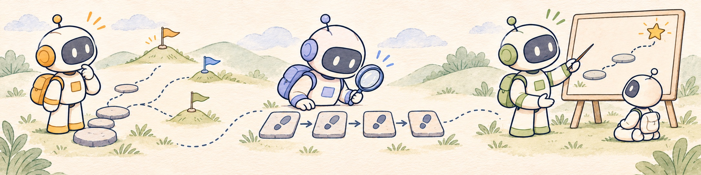

博客2026 年 11 月 22 日智能体 · 强化学习阅读约 14 分钟
Actor, Judge, or Teacher? Understanding Decision Models in Long-Horizon Agents
决策模型针对问题给出一个选项及各选项的概率，因此同一模型有三种用法：为智能体选择动作，即执行者（Actor）；为动作评分，即裁判（Judge）；指导策略训练，即教师（Teacher）。本文发现，独立执行时常出错的模型同样可以成为有效的教师，前提是提问恰当，并提供完整轨迹。

要点
决策模型不输出自由文本，而是针对给定上下文回答问题，答案格式固定，例如从若干选项中选出一个，并给出各选项的概率。问题与状态可以任意组合，因此同一模型既能为智能体选择下一步动作，也能评估已执行的动作，还能在强化学习中为策略的每个动作评分。然而，现有工作评价这类模型时，主要关注其独立执行的表现。
本文关注的问题是：独立执行表现差的模型，能否成为好的教师？在 ALFWorld 上，JEV 独立选择动作时仅完成 42.9% 的任务；而在 GRPO 训练中由它为 1.5B 策略的每个动作评分时，策略在同一批任务上的成功率由单用 GRPO 的 72.8% 提升至 82.9%，在 WebShop 上则由 56.8% 提升至 71.4%。差异来自评估时机：执行者只能事先预判后果，裁判评估的是已经结束的回合，后果已经可见。
这一收益有前提条件。提问须针对每个动作是否有助于达成目标，而非任务能否成功；提供的上下文须为完整轨迹，而非该动作之前的若干步。按此方式在每个回合结束后提问，参数冻结的决策模型即可提供步级监督，既无需步级标注，也无需训练 critic，每次训练的 API 费用仅为 22 至 30 美元。
1同一模型的三种用法
决策模型的输入包括问题与上下文两部分。对于选择题，模型选出一个选项，并给出各选项的概率；对于是非题，模型返回 [0, 1] 区间内的分数。以下三种角色使用同一模型，区别仅在于提问内容与回答的用途。
- 执行者（Actor）。每一步，模型根据目标、历史与当前观测，从合法命令中选出下一步动作并执行。
- 裁判（Judge）。模型为已有轨迹中的每个动作评分。实验调整两个维度：一是提供的上下文，即截至该动作的轨迹（Prefix，前缀）或完整轨迹（Hindsight，事后回看）；二是提问内容，即执行该动作后任务能否成功（Value），或该动作是否推进了目标（Progress）。
- 教师（Teacher）。模型为训练中的策略所执行的动作评分，分数作为步级信用信号接入 GRPO。模型参数始终冻结，测试阶段不参与。
图 1以论文的主线示例“把加热过的杯子放到桌上”依次演示三种角色。
执行者选择下一步动作
- A
place mug on table - B
go to microwave - C
look… 其他合法动作
问题下一步应执行哪个动作？
裁判为已有轨迹中的动作评分
历史回合：把加热过的杯子放进柜子
- 6
move mug to cabinet放置过早 - 7
take mug from cabinet - 8
go to microwave - 9
open microwave待评分 - 10
heat mug里程碑 - 12
move mug to cabinet目标完成
问题该动作是否有助于达成目标？
教师为策略生成的 rollout 评分
πθ正在训练的策略已更新
拿起杯子 再拿一次无效 加热杯子里程碑 放下 ✓ 2 放下冷杯子 取回杯子 加热杯子 放下 ✓问题（对每个动作提问）该动作是否有助于达成目标？
决策模型
问题 + 上下文 → 固定格式的答案。示例模型为 JEV，即本文评测的六个模型之一。
next_action上下文 目标 · 历史 · 观测回答 一个选项 + 各选项的概率progress上下文 截至第 9 步的轨迹 （Prefix）回答 [0, 1] 区间的分数progress上下文 完整轨迹 （Hindsight）回答 [0, 1] 区间的分数progress，逐个动作上下文 完整 rollout （Hindsight）回答 每个动作一个分数各选项概率
place mug on table已放下 ✓未加热 ✗先完成了容易的子目标，导致任务失败。
第 9 步 open microwave 的得分
问题不变；看到后续的加热步骤后，才能判断这一步的作用。
教师评分 组均值 0.71
调低无效动作的优势，提高取回冷杯子一步的优势。
本文评测了六个支持此类问答的模型。其中三个是已正式发布的专用决策模型，通过各自的决策 API 调用；另外三个是通用大模型，提出相同问题后以两种方式获取答案：在提示中要求输出 JSON，或直接读取合法答案标签的首 token 概率。其中两个通用大模型分别是 Decider v1.2 与 GPT Decisions 的基座，因此这两个专用模型均可与各自的基座直接比较。
| 模型 | 基座模型 | 决策接口的实现方式 | 访问方式 |
|---|---|---|---|
| JEV | 未公开 | 未公开 | 仅 API |
| Decider v1.2 | Qwen3.8-27B | 全参数微调 | 开放权重 |
| GPT Decisions | GPT-6 Luna | 未公开 | 仅 API |
| Qwen prompted | Qwen3.8-27B | 提示（输出 JSON） | 开放权重 |
| Qwen constrained | Qwen3.8-27B | 读取限定标签的概率（首 token） | 开放权重 |
| GPT Luna | GPT-6 Luna | 提示（输出 JSON） | 仅 API |
实验采用两个文本环境，其中部分要求必须按固定顺序完成。ALFWorld [1] 是家务环境，智能体使用 go to、take、heat 等命令完成目标。其中 Clean、Heat、Cool 三类任务存在依赖关系：物体须先改变状态，才能放到指定位置。Pick2 同样包含两个要求，即放置两个物体，但顺序不限。WebShop [2] 是购物环境，智能体在商品目录中搜索，下单前须选定指定选项。
2作为执行者：容易的子目标导致决策偏离
六个模型作为执行者时，只要某一子目标必须先于另一子目标完成，就容易出错：较容易的子目标使模型偏离应当先执行的步骤。
子目标有先后顺序时执行失败
所有模型在有依赖任务上的成功率均远低于无依赖任务（图 2）。JEV 能完成 70.8% 的 Pick2 任务，但在各类依赖任务上均不超过 18.8%。整体表现最好的执行者 Decider v1.2（63.6%）在 Heat 任务上也仅为 18.8%。Pick2 同样包含两个子目标，可见难点不在子目标的数量，而在其顺序。
ALFWorld，执行者
执行者在各类任务上的成功率
失败回合显示了顺序出错的过程。执行者手持杯子站在桌边，此时有两种选择：直接放下杯子，或前往微波炉加热杯子后再返回。许多失败回合中，执行者直接放下了未加热的杯子，此后任务无法按要求完成。
错误源于干扰而非能力不足
从 66 个任务中选取 116 个状态。在这些状态下，一个动作即可完成容易的子目标，而必须先完成的子目标尚未完成。在每个状态上，分别用两个目标询问执行者，两者仅相差该容易的子目标，例如“把加热过的杯子放到边桌上”与“加热杯子”。其余输入完全相同，包括历史、观测、候选动作与剩余步数预算。
目标完整时，JEV 将 63.8% 的概率分配给容易的子目标，仅将 14.6% 分配给必须先执行的步骤；从目标中去掉容易的子目标后，两者变为 2.5% 与 77.6%（图 3 左）。六个执行者的变化方向一致。由此可见，模型知道应先执行哪一步，只是概率被容易的子目标占据。提示模型注意依赖关系也几乎无效：加入一句通用提示后，成功率仅变化 −2.8 至 +5.2 个百分点；再提供一个按正确顺序完成的示例，也只对部分模型有效（图 3 右）。
JEV，116 个状态
概率分配
JEV 在各类动作上的概率占比（%）
同一组 116 个状态，继续执行至回合结束
提示里加入顺序示例后的成功率
原提示 → 依赖提示 + 加热杯子示例（%）
执行者要在此处做对，必须在任何后果出现之前预见到：这一顺手的动作将导致任务无法完成。裁判则在后果出现之后评价动作。
3作为裁判：提问方式与可见信息的影响
执行时被忽略的贡献，同一模型作为裁判时能够识别。只有看到完整轨迹，才能看出前期动作如何为后续进展铺垫；只有询问每个动作是否有帮助，才能将这些动作与未产生任何变化的动作区分开。
复用从上述 116 个状态出发的成功轨迹，隐去结果标签，询问每个裁判：在诊断状态下执行的第一个动作是否有助于达成目标。将前缀替换为完整轨迹后，六个模型对这些动作的平均评分均有所上升，JEV 由 0.41 升至 0.59。由此产生两个问题：完整轨迹是否只是让所有动作的评分普遍升高？裁判从中额外获得了哪些信息？
评估动作贡献而非任务成败
将 462 条 ALFWorld 轨迹中的动作标注为三类：里程碑，即完成某一子目标的动作；无效动作，即环境未发生任何变化的动作；以及其他动作。可见完整轨迹时，Value 问题对这三类动作的评分几乎相同：回合最终成功，其中每个动作都被视为“通向成功”。改用 Progress 问题后，六个模型均能区分三类动作（图 4）。以 JEV 为例，在同一条轨迹内，Progress 对里程碑的评分比无效动作高 0.36，Value 仅高 0.05；在每条轨迹得分最高的动作中，Progress 选中里程碑的比例也高出 8.0 至 16.0 个百分点。
ALFWorld，462 条轨迹，完整轨迹（Hindsight）
各类动作的平均得分
提供完整轨迹
为分析额外上下文的作用，将问题固定为 Progress，并逐段展开轨迹：先只提供前缀，再加入动作之后的即时反馈，然后依次加入后续部分的 25%、50%、75% 与全部。在 167 条轨迹上，加入反馈后，JEV 对轨迹内动作的排名平均变动 1.95 位；看到完整轨迹时，平均变动 3.30 位。图 5 展示其中一条轨迹，可拖动滑块或点击播放。
JEV 作为裁判，Progress 问题
“把加热过的杯子放进柜子”：可见回合增加时各步得分的变化
只看前缀时，JEV 对过早放置（第 6 步）评分 0.79，对走向微波炉（第 8 步）与打开微波炉（第 9 步）仅评 0.23 与 0.20，这与执行者偏向容易子目标属于同一问题。加入即时反馈后结果更差，放置的评分升至 0.90。随着后续步骤逐渐可见，微波炉相关步骤的评分才开始上升：看到加热步骤后，打开微波炉升至 0.66，看到完整轨迹时为 0.76。重复的 look（第 2 步）始终得分很低，因为仅凭前缀即可判断它重复了第 1 步。
Decider v1.2 与 GPT Decisions 公开了基座模型。对于相同问题，这两个专用决策模型作为裁判的准确性均高于各自的基座，每次评分的成本也低 28% 至 43%。
4作为教师：评判最准确的设置，训练效果也最好
区分有用与无用动作效果最好的评分方式，训练出的策略也最强；提升最大的任务，恰恰是教师自身作为执行者时无法完成的任务。
从评分到优势
GRPO 为一条 rollout 中的所有动作分配相同的结果优势。对每个任务，策略采样一组轨迹；轨迹结束后，教师 D 仅依据目标与轨迹本身，为每条轨迹 τi 中执行过的每个动作 t 评分，不使用奖励与成功标签，也不访问隐藏状态：
分数先减去组内所有已评分动作的均值 s̄，再乘以权重 λ = 0.5 加到优势上。此处有意不除以标准差：若教师在某一组内几乎无法区分动作优劣，该组获得的调整也相应较小。图 6 展示了教师项对图 1 中两条 rollout 的影响。
示意：同一组的两条 rollout
教师项对各动作优势的调整量
实验结果
以 JEV 为教师训练 Qwen2.5-1.5B-Instruct，遍历问题与上下文的四种组合，基线为仅使用结果奖励的 GRPO，结果取自 GiGPO [3]。每个策略用三个随机种子评估。Hindsight + Progress 在两个环境上均最优：ALFWorld 成功率由 72.8% 提升至 82.9%，WebShop 由 56.8% 提升至 71.4%。ALFWorld 的每类任务均有提升，其中 Cool（+23.0）与 Look（+20.7）提升最大。仅提供前缀时，两种问题效果相当。这一排序与前文裁判分析的结论一致：在 Hindsight 设置下，Value 问题对同一回合内所有动作的评分相近，无法区分有用的动作。
Qwen2.5-1.5B-Instruct，三个种子的平均值
成功率：教师指导的策略与 GRPO 对比
在 7B 规模上提升依然存在：ALFWorld 由 77.6% 提升至 83.8%，WebShop 由 66.1% 提升至 73.6%。以此方式训练的 1.5B 策略，在两个环境上均优于仅用结果奖励训练的 7B 策略。Hindsight + Progress 完成任务所需的步数也更少：ALFWorld 上 74.5% 的任务在 20 个动作以内完成，其他设置为 63.6% 至 69.5%；WebShop 上 71.1% 的任务在 10 个动作以内完成，其他设置为 60.9% 至 62.2%。
学生超过教师
在同一批 ALFWorld 评估任务上，JEV 独立执行仅完成 42.9%，以其评分训练的 1.5B 策略完成 82.9%。提升最大的恰恰是 JEV 作为执行者时最不擅长的依赖任务：策略在这类任务上达到 86.8%，比其他问题与上下文设置高 6.9 至 16.2 个百分点，而 JEV 自身仅能完成其中的 14.7%（图 8）。教师无法独立完成的任务，仍可由其提供有效的训练信号。
ALFWorld，同一批评估任务
JEV 独立执行与其指导的 1.5B 策略对比
成本。训练中每个执行过的动作都需要评分。JEV 通过 OpenRouter 调用，输入价格为每百万 token 0.042 美元；训练共 150 步，每批 16 个任务，每个任务 8 条 rollout。一次完整训练的评分费用为 22.21 至 30.07 美元。
| Hindsight + Progress 训练 | ALFWorld 1.5B | ALFWorld 7B | WebShop 1.5B | WebShop 7B |
|---|---|---|---|---|
| 每条 rollout 最多动作数 | 30 | 30 | 15 | 15 |
| 教师 API 费用（美元） | 30.07 | 24.50 | 22.21 | 26.83 |
5对智能体使用决策模型的启示
- 执行者知道应执行哪一步，只是注意力被容易的步骤吸引。当必须先完成的步骤是唯一的子目标时，执行者能够选对；泛化的提醒无法纠正这一错误。若必须由决策模型执行，将目标拆分为有先后顺序的子目标，比增加指令更可能奏效。
- 问题决定信号的粒度。询问最终结果时，轨迹中各动作的评分相近，基本等同于重复结果奖励；询问每个动作的贡献，才能区分这些动作。
- Hindsight 恰好针对执行者的出错之处。只有看到完整轨迹，裁判才能对走向必须先完成的子目标的步骤给予肯定。因此，决策模型最适合在回合结束后为动作评分，例如用于 RL 训练；不太适合在线筛选动作，因为此时只有前缀可用。
- 训练前先选择裁判。仅在已有轨迹上比较评判效果，即可找到训练出最佳策略的问题与上下文组合，成本只占一次 RL 训练的一小部分。选择教师应依据其评判是否准确，而非其执行能力。
- 步级监督的成本不再高昂。决策模型参数冻结，仅在每个回合结束后调用，测试阶段无需使用。每次训练花费数十美元，即可使小规模策略超过仅用结果奖励训练的大规模策略。
引用
@article{liu2026actor,
title = {Actor, Judge, or Teacher? Understanding Decision Models in Long-Horizon Agents},
author = {Liu, Haochen and Zhu, Qianhao and Wang, Zixuan and Li, Dingming and Chen, Tongbo and Qiu, Peng and Qu, Yingqi and Lu, Weiming and Xiao, Jun and Shen, Yongliang},
journal = {arXiv preprint arXiv:2611.17167},
year = {2026}
}参考文献
- Shridhar et al. (2021). ALFWorld: Aligning Text and Embodied Environments for Interactive Learning. ICLR.
- Yao et al. (2022). WebShop: Towards Scalable Real-World Web Interaction with Grounded Language Agents. NeurIPS.
- Feng et al. (2025). Group-in-Group Policy Optimization for LLM Agent Training. NeurIPS.
- Shao et al. (2024). DeepSeekMath: Pushing the Limits of Mathematical Reasoning in Open Language Models (GRPO).
- Harutyunyan et al. (2019). Hindsight Credit Assignment. NeurIPS.
完整参考文献、提示词和附录实验见论文。